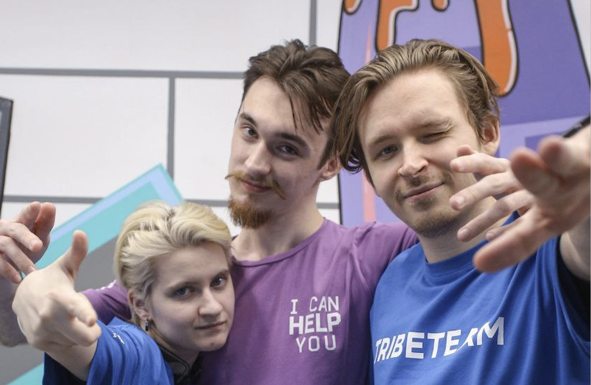
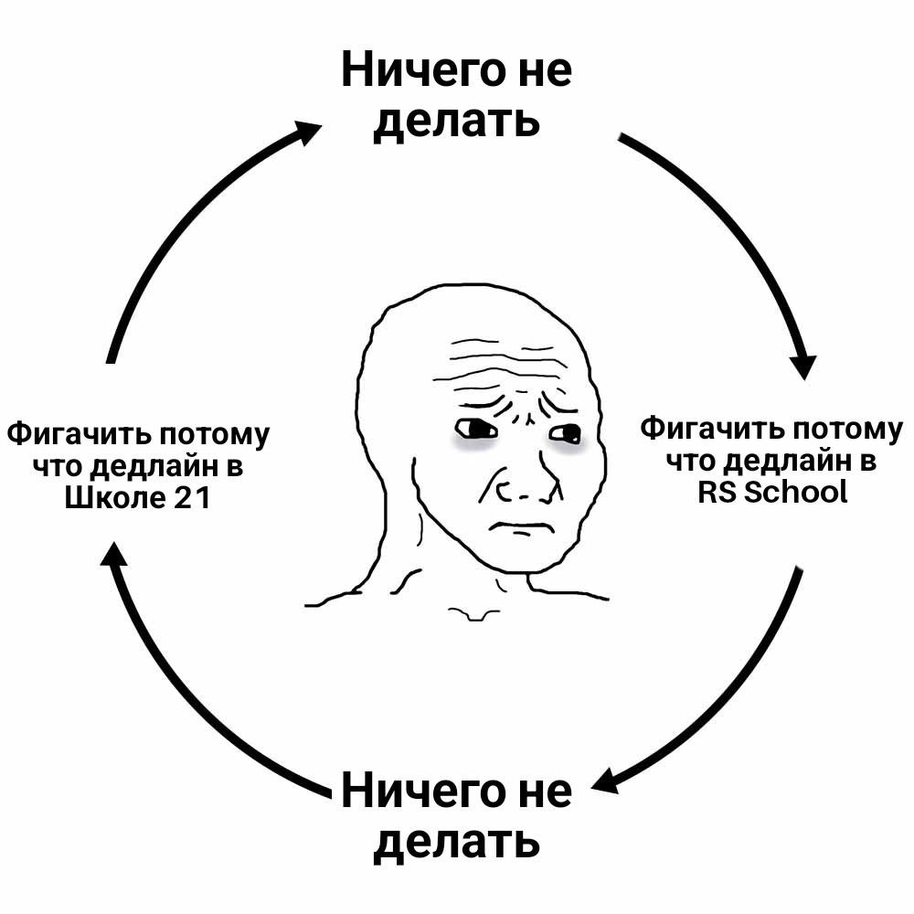
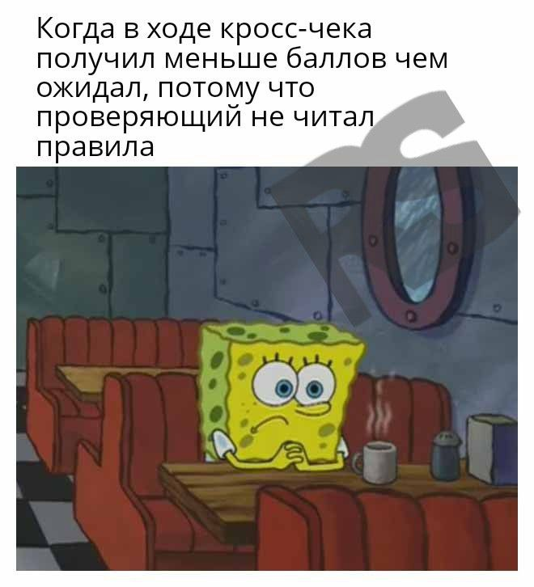
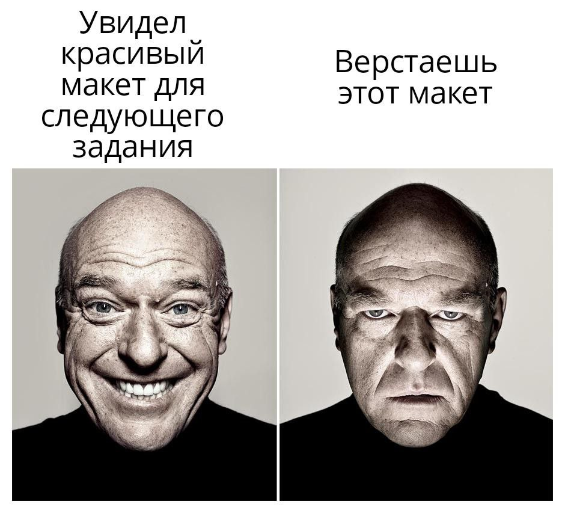
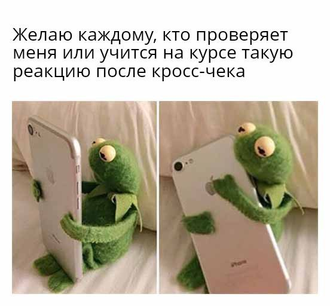

CSS Bayan
Hello dude
Добро пожаловать! Рад видеть тебя на этой страничке. Год назад я работал менеджером в Макдоналдс, но решил что-то поменять и в сентябре 2022 подался на интенсив в
Школу 21
.
About me now
 И вот я поступил! Сейчас я участник основы :)
С абсолютного нуля, я уже неплохо разбираюсь в языке С.
Паралелльно изучаю frontend(JS) и прохожу RS School.

Сross-check tips
Зачастую, при проверках, ребята, когда видят не выполненный пункт сразу ставят участнику минус баллы, что в корне не верно. Прочитай правила проведения cross-check проверок и убедись, что при проверке всегда есть необходимый запас по баллам, дабы компенсировать разное видение проверяющего-проверяемого. Советую открыть эту
ссылку
, выбрать необходимое задание и проверить в рамках чеклиста. Затем можно будет скопировать результат в окно для проверки. 
School tips
Вообще эта школа построена на схожих принципах с моей. У нас тоже ученики проверяют друг друга, при этому у нас нет никаких лекций и учителей. Всю информацию мы добываем сами. Я уже закончил "0 Stage" и хочу дать вам один совет. Даже если вам тяжело, даже если задание кажется невыполнимым, не сдавайтесь и делайте столько сколько можете на данный момент и идите дальше. 
Good Luck
Как говорил Juice WRLD "hard work pays off". А потом взял и умер. Но я всеравно думаю что стараться стоит) Желаю удачи! 